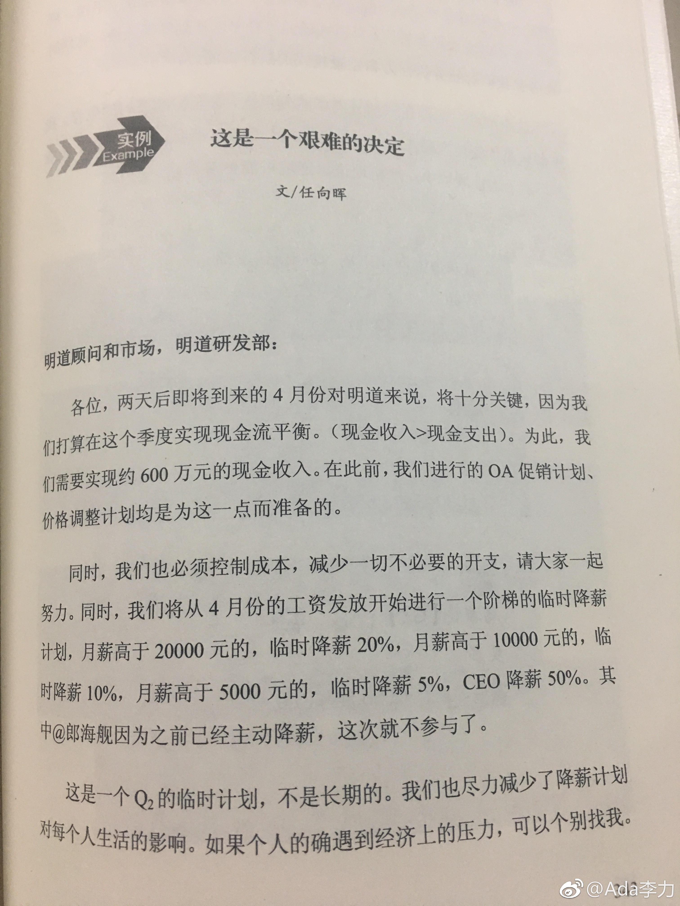

#读书#翻到《高绩效团队的三个秘密》的最后一章，是一封创始人发出的减薪邮件。这本书是2016年6月出版，所以猜想邮件是更早时间发出来的。
对于明道提出的三个秘密：开放透明的沟通文化，弱化科层的任务型组织以及自我驱动的成员，我很认同。这本书也收录了明道成员的很多文章，以及一些内部讨论，即使从PR角度来看，这本书的坦率和透明也是惊人的。
书中有销售副总许维的很多文章，看了下微博，他在2016年7月加盟了投资公司，距离出书一个月。
明道自己作为创业公司也是很精彩的故事。
对于明道提出的三个秘密：开放透明的沟通文化，弱化科层的任务型组织以及自我驱动的成员，我很认同。这本书也收录了明道成员的很多文章，以及一些内部讨论，即使从PR角度来看，这本书的坦率和透明也是惊人的。
书中有销售副总许维的很多文章，看了下微博，他在2016年7月加盟了投资公司，距离出书一个月。
明道自己作为创业公司也是很精彩的故事。

- 